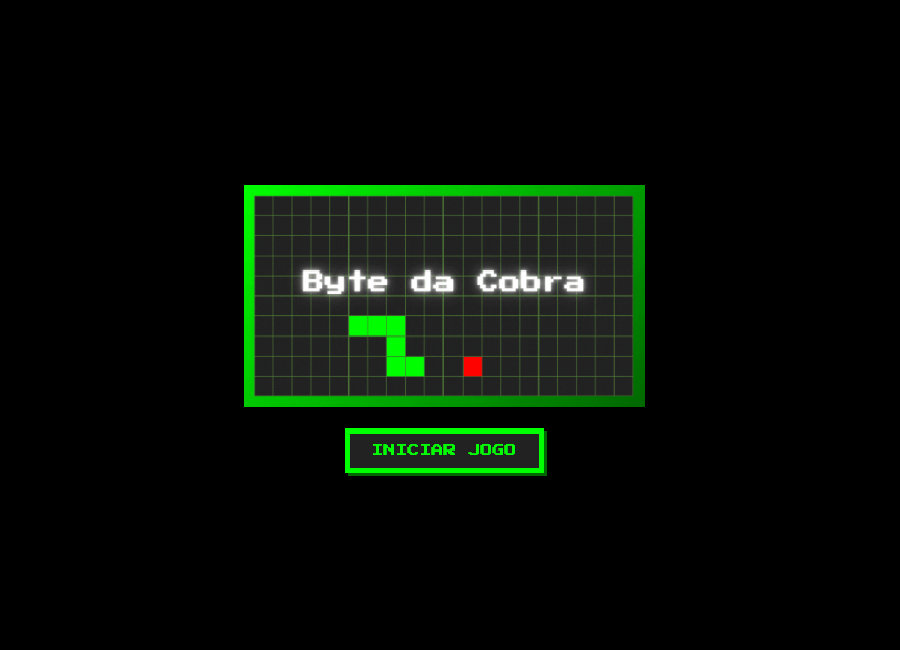
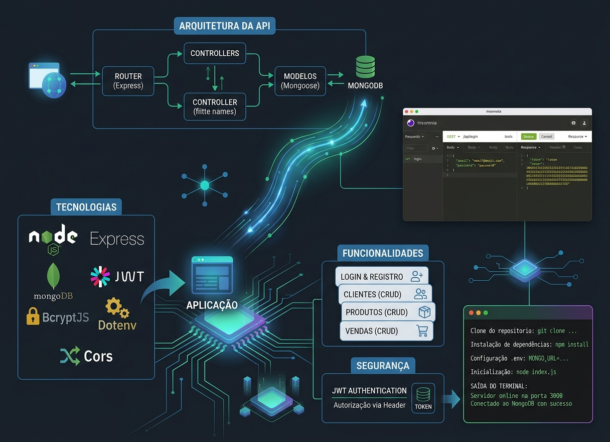
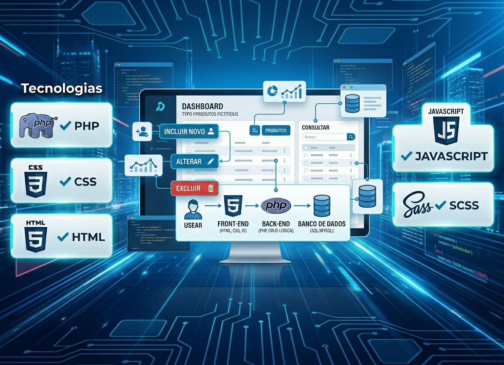
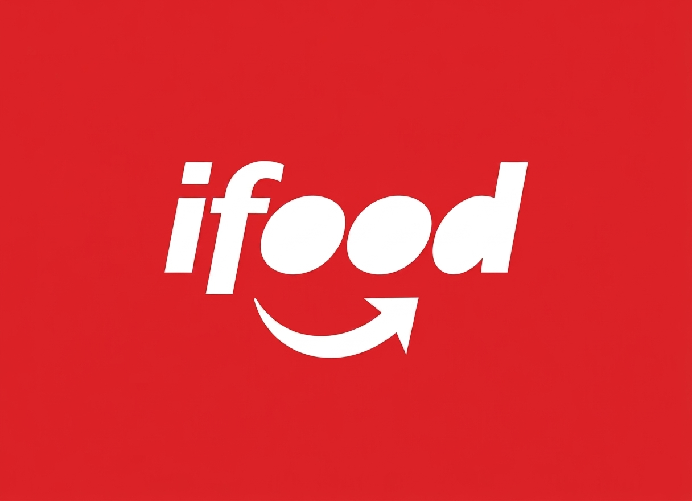

Desenvolvedor Front-End • Explorando Web, Mobile e Python




Olá! Sou o Zé, formado em Sistemas de Informação. Desenvolvo projetos utilizando HTML, CSS, JavaScript, Kotlin e Python, buscando sempre expandir meus conhecimentos técnicos e explorar as diversas áreas da computação. Este portfólio reúne os projetos e as experiências que representam minha trajetória de aprendizado e evolução profissional.